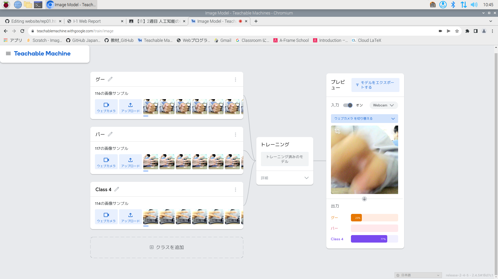
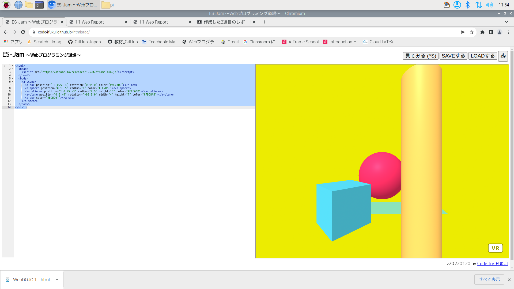

第2週目
2-1 レポートをHTMLで作る
１週目のレポート
1.内容
１週目のレポートの雛形をコピーして新しいホームページにした。
2.感想
レポートを書いているうちにどうやってファイルの画像をレポートのホームページに表示させられるか、改行の仕方など、
やり方が自分の中で確立していくのが実感できて面白かったです。
2-2 機械学習体験

1.内容
webカメラでAIにグーチョキパーを判定できるように学習させた。
2.感想
AIがどういったふうに動きを学習するのかを目の前でみれて良かったです。
これまでの傾向から統計したデータをもとに判断しているのかなとおもいました。
2-3 JavaScript体験：３次元モデルのプログラムを作る

３次元モデル
1.内容
webプログラミング道場で３Dモデルを編集した。
2.感想
これまでに触ったCADなどのソフトはこういった操作がかなり最適化されているんだなと感じました
しかし、基本的な数値のいじり方はそれらのソフトと大差なかったです。